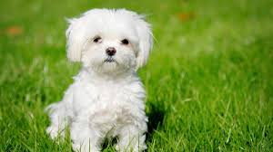
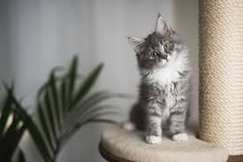
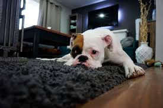
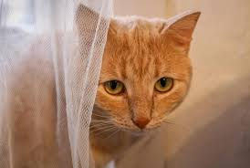
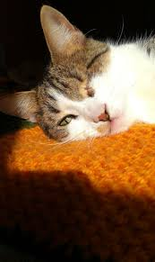

Carlitos

Ramona

Tomy

Max

Simon

Quieres adopatar hoy?
Gretta & Tomy's nace como el sueño de dar una segunda oportunidad a miles de perros y gatos que sufren abandono, hambre y enfermedades en las calles de nuestra ciudad, nace de la unión de personas con enormes ganas de construir el país en el que queremos vivir. Somos un agente de cambio, una organización de la sociedad civil y un emprendimiento social*, definido como aquel que aplica estrategias comerciales para resolver problemas sociales y ambientales. Nuestra finalidad es realizar una actividad que beneficie a la comunidad y que produzca cambios en la mentalidad de las personas, para que todos se sumen a resolver el grave problema de la sobrepoblación de mascotas abandonadas que afecta tanto a los animales como a las personas.